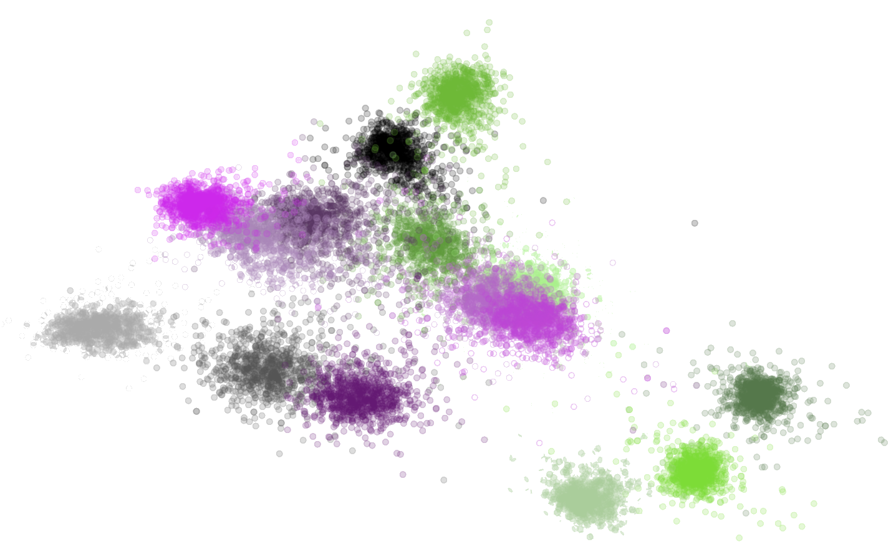
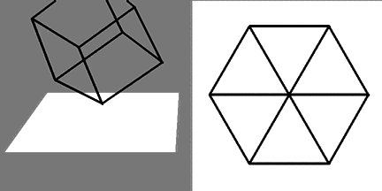

Received 19 June 2002; reveiced in revised form 30 July 2007
Is contradiction accidental, or is it the necessary companion of intelligence?
Thesis: Contradiction can be seen as a tool to increase intelligence in biological
systems.
A mathematically sound answer to this question could give new perspectives on artificial intelligence. Think for instance about modern loss functions as

A contradiction is an observed phenomenon in which the same
entity evolves in two different ways (in different times) from the
same initial state.
A contradiction is an observed phenomenon in which the same entity evolves in two different ways (in different times) from the same initial state.
$\left(\mbox{Observer}, \mbox{Event}\right)$

Any sufficiently intelligent entity must be contradictory
Observation: intelligence needs a context, and an observer in order to be studied.
Thus, a quantum-mechanic flavoured replacement has to be put in place:
$$\mbox{particle}\mapsto\mbox{observed particle}$$
Entity, environment, intelligence, contradiction can be defined in the fairly general contex of cellular automata Furthermore, cellular automata have the property of universal computation.
Video realised by courtesy of Iratxe Ansa and Igor Bacovich, and the dancers of the wonderful Metamorphosis project Code available here
Def [Existence]: The existence of an entity depends exclusively on the observer.
Caveat: Here the subjectivity of existence is not to be discussed. We should rather
decide to take it into account or not.
Def [Observer]: Let $\mathcal{P}_{ent}$ and $\mathcal{P}_{ENV}$ be non-empty, finite sets
of perceptible states for an entity and an environment, respectively. Assume that it exists a
privileged element $0\in\mathcal{P}_{ent}$. An observer is any function
$$\square = \left(ps_{ent}, ps_{ENV}\right):\Sigma\rightarrow \mathcal{P}_{ent}\times\mathcal{P}_{ENV}$$
Observations
Def [Existence]: The existence of an entity depends exclusively on the observer.
Caveat: Here the subjectivity of existence is not to be discussed. We should rather
decide to take it into account or not.
Def [Observer]: Let $\mathcal{P}_{ent}$ and $\mathcal{P}_{ENV}$ be non-empty, finite sets
of perceptible states for an entity and an environment, respectively. Assume that it exists a
privileged element $0\in\mathcal{P}_{ent}$. An observer is any function
$$\square = \left(ps_{ent}, ps_{ENV}\right):\Sigma\rightarrow \mathcal{P}_{ent}\times\mathcal{P}_{ENV}$$
Def [Entity & lifetime]: Each maximal sequence of consecutive perceived states in
$\mathcal{P}_{ent}\setminus\left\{0\right\}$, say $\left\{ ps_{ent}\left(s_{t+i}\right) \right\}_{i=0}^q$ is
an entity. The set $\left\{t, \dots, t+q\right\}$ is the lifetime of the entity.
Def [Environment]: Let $\varepsilon = \left(ps_{ent}\left(s_{t} \right), \dots, ps_{ent}\left(s_{t+q} \right)\right)$ be an entity. We call environment $\left(ps_{ENV}\left(s_{t} \right), \dots, ps_{ENV}\left(s_{t+q} \right)\right)$
Def [Intelligence]: Given an entity $\varepsilon = \left(ps_{ent}\left(s_{t} \right), \dots, ps_{ent}\left(s_{t+q} \right)\right)$ with respect to the observer $\square$, we define the intelligence $L\left(\varepsilon, \square\right)$ as the entity's lifetime $q$.
Reminder: An entity is contradictory if faced with the same circumstances
(as perceived by the observer) in two occasions in time, it exhibits different behaviours.
Def [Contradictory entity]: Let $\varepsilon = \left(ps_{ent}\left(s_{t} \right), \dots, ps_{ent}\left(s_{t+q} \right)\right)$
be an entity for $\square$. If there exists $a,b\in\mathbb{N}$, $a, b\leq q$, such that
$$
ps_{ENV}\left(s_{t+a} \right) = ps_{ENV}\left(s_{t+b} \right) \mbox{ and } ps_{ent}\left(s_{t+a} \right) \neq ps_{ent}\left(s_{t+b} \right)
$$
then $\varepsilon$ is contradictory.
Def [Environment]: Let $\varepsilon = \left(ps_{ent}\left(s_{t} \right), \dots, ps_{ent}\left(s_{t+q} \right)\right)$ be an entity. We call environment $\left(ps_{ENV}\left(s_{t} \right), \dots, ps_{ENV}\left(s_{t+q} \right)\right)$
Def [Intelligence]: Given an entity $\varepsilon = \left(ps_{ent}\left(s_{t} \right), \dots, ps_{ent}\left(s_{t+q} \right)\right)$ with respect to the observer $\square$, we define the intelligence $L\left(\varepsilon, \square\right)$ as the entity's lifetime $q$.
Def [Contradictory entity]: Let $\varepsilon = \left(ps_{ent}\left(s_{t} \right), \dots, ps_{ent}\left(s_{t+q} \right)\right)$ be an entity for $\square$. If there exists $a,b\in\mathbb{N}$, $a, b\leq q$, such that $$ ps_{ENV}\left(s_{t+a} \right) = ps_{ENV}\left(s_{t+b} \right) \mbox{ and } ps_{ent}\left(s_{t+a} \right) \neq ps_{ent}\left(s_{t+b} \right) $$ then $\varepsilon$ is contradictory.
How does this fit in the classical formulation of contradictory theory?
Def [Environment]: Let $\varepsilon = \left(ps_{ent}\left(s_{t} \right), \dots, ps_{ent}\left(s_{t+q} \right)\right)$ be an entity. We call environment $\left(ps_{ENV}\left(s_{t} \right), \dots, ps_{ENV}\left(s_{t+q} \right)\right)$
Def [Intelligence]: Given an entity $\varepsilon = \left(ps_{ent}\left(s_{t} \right), \dots, ps_{ent}\left(s_{t+q} \right)\right)$ with respect to the observer $\square$, we define the intelligence $L\left(\varepsilon, \square\right)$ as the entity's lifetime $q$.
Def [Contradictory entity]: Let $\varepsilon = \left(ps_{ent}\left(s_{t} \right), \dots, ps_{ent}\left(s_{t+q} \right)\right)$
be an entity for $\square$. If there exists $a,b\in\mathbb{N}$, $a, b\leq q$, such that
$$
ps_{ENV}\left(s_{t+a} \right) = ps_{ENV}\left(s_{t+b} \right) \mbox{ and } ps_{ent}\left(s_{t+a} \right) \neq ps_{ent}\left(s_{t+b} \right)
$$
then $\varepsilon$ is contradictory.
Def [Deterministic environment]: An environment $\left(ps_{ENV}\left(s_{t} \right), \dots, ps_{ENV}\left(s_{t+q} \right)\right)$ is
deterministic if for every $a,b\leq q$ such that
$$
ps_{ENV}\left(s_{t+a} \right) = ps_{ENV}\left(s_{t+b} \right) \mbox{ and } ps_{ent}\left(s_{t+a} \right) = ps_{ent}\left(s_{t+b} \right),
$$
we have $ps_{ENV}\left(s_{t+a+1} \right) = ps_{ENV}\left(s_{t+b+1} \right)$.
Let $\varepsilon$ be an entity with finite lifetime and deterministic environment, with respect to the observer $\square$, for the cellular automaton $\mathcal{C}$. Let $k = |\mathcal{P}_{ent}\times\mathcal{P}_{ENV}|$. If the intelligence (lifetime) of $\varepsilon\geq k$, then $\varepsilon$ must be contradictory.
$P_i = \left(\mbox{up}, \mbox{down}, \dots\right)$. $P_i$ wins the $k$th round if $c_{k+1} > c_{k}$ and $P_{i,k} = \mbox{up}$.
$r_{cc}= 2,\, r_{nn} = 0,$ $r_{nc} = \left\{\begin{matrix}n\mapsto 1,\\ c\mapsto -1\end{matrix}\right.$
$\$ = 10000$, $p\in \{900, 1000, 1100\}$, $t = 7 \mbox{ days}$.